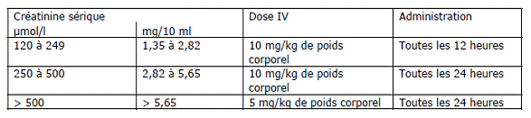

RÉSUMÉ DES CARACTÉRISTIQUES DU PRODUIT
ANSM - Mis à jour le : 05/12/2013
EXACYL 0,5 g/5 mL I.V., solution injectable
2. COMPOSITION QUALITATIVE ET QUANTITATIVE
Acide tranexamique ............................................................................................................................. 0,5 g
Pour une ampoule de 5 mL.
Pour la liste complète des excipients, voir rubrique 6.1.
Solution injectable.
4.1. Indications thérapeutiques
Prévention et traitement des hémorragies dues à une fibrinolyse générale ou locale chez l’adulte et l’enfant à partir d’un an.
Les indications spécifiques incluent :
· Hémorragies causées par une fibrinolyse générale ou locale telles que :
o Ménorragies et métrorragies,
o Hémorragies gastro-intestinales,
o Affections urinaires hémorragiques, suite à une intervention chirurgicale prostatique ou des actes chirurgicaux affectant les voies urinaires,
· Intervention chirurgicale oto-rhino-laryngologique (adénoïdectomie, amygdalectomie, extractions dentaires),
· Intervention chirurgicale gynécologique ou affections d’origine obstétricale,
· Intervention chirurgicale thoracique et abdominale et autres interventions chirurgicales majeures telles qu’une chirurgie cardiovasculaire,
· Prise en charge d’hémorragies dues à l’administration d’un agent fibrinolytique.
4.2. Posologie et mode d'administration
Posologie
Adultes
Sauf prescription contraire, les doses suivantes sont recommandées :
Traitement standard d’une fibrinolyse locale :
· 0,5 g (1 ampoule de 5 mL) à 1 g (1 ampoule de 10 mL ou 2 ampoules de 5 mL) d’acide tranexamique (ATX) par injection intraveineuse lente (= 1 mL/minute) deux à trois fois par jour.
Traitement standard d’une fibrinolyse générale :
· 1 g (1 ampoule de 10 mL ou 2 ampoules de 5 mL) d’acide tranexamique (ATX) par injection intraveineuse lente (= 1 mL/minute) toutes les 6 à 8 heures, équivalent à 15 mg/kg de poids corporel.
Insuffisance rénale
En cas d’insuffisance rénale conduisant à un risque d’accumulation, l’utilisation de l’acide tranexamique est contre-indiquée chez les patients atteints d’une insuffisance rénale grave (voir rubrique 4.3). Chez les patients présentant une insuffisance rénale légère à modérée, la posologie de l’acide tranexamique doit être réduite en fonction du taux de créatinine sérique :

Insuffisance hépatique
Aucun ajustement posologique n’est nécessaire chez les patients insuffisants hépatiques.
Population pédiatrique
Chez l’enfant à partir de 1 an, pour les indications actuellement approuvées et décrites à la rubrique 4.1, la posologie est de l’ordre de 20 mg/kg/jour. Cependant, les données concernant l’efficacité, la posologie et la sécurité d’emploi sont limitées pour ces indications.
L’efficacité, la posologie et la sécurité d’emploi de l’acide tranexamique chez les enfants subissant une intervention chirurgicale cardiaque n’ont pas été établies complètement. Les données actuellement disponibles sont limitées et décrites à la rubrique 5.1.
Population âgée
Aucune réduction de la posologie n’est nécessaire sauf en cas d’insuffisance rénale avérée.
Mode d’administration
L’administration doit être faite strictement par injection intraveineuse lente.
· Hypersensibilité à la substance active ou à l’un des excipients mentionnés à la rubrique 6.1.,
· Thrombose veineuse ou artérielle aiguë (voir rubrique 4.4),
· Etats fibrinolytiques consécutifs à une coagulopathie de consommation, à l’exception d’états associés à une activation prédominante du système fibrinolytique avec une hémorragie grave aiguë (voir rubrique 4.4),
· Insuffisance rénale grave (risque d’accumulation),
· Antécédents de convulsions,
· Injections intrathécales et intraventriculaires, applications intracérébrales (risque d’œdème cérébral et de convulsions).
4.4. Mises en garde spéciales et précautions d'emploi
Les indications et le mode d’administration décrits ci-dessus doivent être strictement suivis :
· les injections intraveineuses doivent être administrées très lentement,
· l’acide tranexamique ne doit pas être administré par voie intramusculaire.
Convulsions
Des cas de convulsions ont été rapportés en association avec un traitement par l’acide tranexamique. Lors d’une chirurgie de pontage aortocoronarien (PAC), la plupart de ces cas ont été signalés après une injection intraveineuse (IV) d’acide tranexamique à des doses élevées. Lorsque les doses plus faibles recommandées d’acide tranexamique étaient utilisées, l’incidence des crises post-opératoires était similaire à celle constatée chez des patients non traités.
Troubles visuels
Il faut prêter attention aux troubles visuels possibles, notamment une déficience visuelle, une vision trouble, une perturbation de la vision des couleurs. Si nécessaire, le traitement doit être interrompu. Des examens ophtalmologiques réguliers (examens de l’oeil et notamment acuité visuelle, vision des couleurs, fond de l’oeil, champ visuel, etc.) sont indiqués lors d’une utilisation continue et prolongée d’une solution injectable d’acide tranexamique. Si des changements ophtalmiques pathologiques sont observés, particulièrement en présence de maladies de la rétine, le médecin doit consulter un spécialiste afin de décider de la nécessité d’utiliser à long terme une solution injectable d’acide tranexamique dans chaque cas individuel.
Hématurie
En cas d’hématurie provenant des voies urinaires supérieures , il y a un risque d’obstruction urétrale.
Evénements thrombo-emboliques
Les facteurs de risque de maladie thrombo-embolique doivent être pris en compte avant l’utilisation d’acide tranexamique. Chez les patients présentant des antécédents de maladies thrombo-emboliques ou chez les patients ayant une incidence accrue d’événements thrombo-emboliques dans leurs antécédents familiaux (patients à haut risque de thrombophilie), l’acide tranexamique solution injectable ne doit être administré qu’en présence d’une forte indication médicale, après consultation d’un spécialiste de l’hémostase et sous une stricte surveillance médicale (voir rubrique 4.3).
L’acide tranexamique doit être administré avec prudence chez les patientes recevant des contraceptifs oraux en raison du risque accru de thrombose (voir rubrique 4.5).
Coagulation intravasculaire disséminée
Dans la majorité des cas, les patients souffrant de coagulation intravasculaire disséminée ne doivent pas être traités par l’acide tranexamique (voir rubrique 4.3). L’administration d’acide tranexamique doit être restreinte aux personnes présentant une activation prédominante du système fibrinolytique avec hémorragie grave aiguë. Le profil hématologique se caractérise approximativement comme suit : diminution du temps de lyse des euglobulines; allongement du temps de Quick ; réduction des taux plasmatiques de fibrinogène, facteurs V et VIII, fibrinolysine issue du plasminogène et alpha-2 macroglobuline ; taux plasmatiques normaux de P et du complexe P (complexe prothrombinique), c’est-à-dire les facteurs II (prothrombine), VIII et X ; taux plasmatiques accrus de produits de dégradation du fibrinogène ; une numération normale des plaquettes sanguines. Ce qui précède suppose que l’état pathologique sous-jacent ne modifie pas lui-même les divers éléments de ce profil. En présence de tels cas aigus, une dose unique de 1 g d’acide tranexamique est souvent suffisante pour contrôler l’hémorragie. L’administration de l’acide tranexamique en cas de coagulation intravasculaire disséminée ne doit être envisagée que si des installations de laboratoire d’analyses hématologiques appropriées et un personnel qualifié sont disponibles
4.5. Interactions avec d'autres médicaments et autres formes d'interactions
Aucune étude d’interaction n’a été réalisée. Un traitement simultané par des anticoagulants doit être administré sous la stricte surveillance d’un médecin spécialisé dans ce domaine.
Les médicaments qui agissent sur l’hémostase doivent être administrés avec précaution aux patients traités par l’acide tranexamique. Il existe un risque théorique d’augmentation de la formation de thrombus, tel qu’avec les oestrogènes. Par ailleurs, l’effet antifibrinolytique du médicament peut être antagonisé avec des thrombolytiques.
Les femmes en âge de procréer doivent utiliser une contraception efficace pendant le traitement.
Il n’existe pas de données cliniques suffisantes sur l’utilisation de l’acide tranexamique chez la femme enceinte. En conséquence, bien que les études effectuées chez l’animal n’aient pas mis en évidence d’effets tératogènes et en précaution d’emploi, l’acide tranexamique n’est pas recommandé pendant le premier trimestre de grossesse.
Les données cliniques limitées sur l’utilisation de l’acide tranexamique dans différentes situations cliniques hémorragiques pendant les deuxième et troisième trimestres n’ont pas mis en évidence d’effet délétère sur le fœtus. L’acide tranexamique ne doit être utilisé pendant la grossesse que si le bénéfice escompté justifie le risque potentiel.
L’acide tranexamique est excrété dans le lait maternel. Par conséquent, l’allaitement n’est pas recommandé.
Fécondité
Il n’existe pas de données cliniques sur les effets de l’acide tranexamique sur la fécondité.
4.7. Effets sur l'aptitude à conduire des véhicules et à utiliser des machines
Aucune étude n’a été réalisée sur l’aptitude à conduire des véhicules et à utiliser des machines.
Les effets indésirables, rapportés par les études cliniques et la pharmacovigilance post-commercialisation, sont repris ci-dessous par classe de systèmes d’organes.
Tableau reprenant la liste des effets indésirables
Les effets indésirables signalés sont présentés dans le tableau ci-dessous. Les effets indésirables sont repris selon les classes principales de systèmes d’organes MedDRA. Au sein de chaque classe de systèmes d’organes, les effets indésirables sont présentés par fréquence. Au sein de chaque groupe de fréquence, les effets indésirables sont présentés par ordre décroissant de gravité. Les fréquences ont été définies comme suit : très fréquent (≥1/10) ; fréquent (≥1/100 à <1/10) ; peu fréquent (≥1/1000 à <1/100) ; fréquence indéterminée (ne peut être estimée sur la base des données disponibles).
|
d’organes MedDRA |
Fréquence |
Effets indésirables |
|
Affections de la peau et du tissu sous-cutané |
Peu fréquent |
- Dermite allergique |
|
Affections gastro-intestinales |
Fréquent |
- Diarrhée - Vomissements - Nausées |
|
Affections du système nerveux |
Fréquence indéterminée |
- Convulsions, particulièrement en cas de mésusage (voir les rubriques 4.3 et 4.4) |
|
Affections oculaires |
Fréquence indéterminée |
- Troubles visuels, dont des troubles de la perception des couleurs |
|
Affections vasculaires |
Fréquence indéterminée |
- Malaise avec hypotension, avec ou sans perte de conscience (généralement après une injection intraveineuse trop rapide, exceptionnellement après une administration par voie orale) - Thrombose artérielle ou veineuse susceptible de survenir dans n’importe quel site |
|
Affections du système immunitaire |
Fréquence indéterminée |
- Réactions d’hypersensibilité, dont une anaphylaxie |
Déclaration des effets indésirables suspectés
La déclaration des effets indésirables suspectés après autorisation du médicament est importante. Elle permet une surveillance continue du rapport bénéfice/risque du médicament. Les professionnels de santé déclarent tout effet indésirable suspecté via le système national de déclaration : Agence nationale de sécurité du médicament et des produits de santé (Ansm) et réseau des Centres Régionaux de Pharmacovigilance - Site internet: www.ansm.sante.fr
Aucun cas de surdosage n’a été rapporté.
Les signes et symptômes peuvent inclure vertiges, céphalées, hypotension et convulsions. Il a été démontré que les convulsions tendent à survenir à une fréquence plus élevée lorsque la dose augmente.
La prise en charge d’un surdosage consiste en un traitement symptomatique.
5. PROPRIETES PHARMACOLOGIQUES
5.1. Propriétés pharmacodynamiques
Classe pharmacothérapeutique : ANTI-HEMORRAGIQUES- ANTIFIBRINOLYTIQUES
Code ATC : B02AA02
L’acide tranexamique développe une action anti-hémorragique par inhibition des activités fibrinolytiques de la plasmine.
Il se forme ainsi un complexe entre l’acide tranexamique et le plasminogène, l’acide tranexamique étant lié au plasminogène lors de sa transformation en plasmine.
L’activité du complexe entre l’acide tranexamique et la plasmine sur l’activité de la fibrine est moins forte que l’activité de la plasmine libre seule.
Les études in vitro ont démontré que l’acide tranexamique administré à des doses élevées réduit l’activité du complément.
Population pédiatrique
Chez l’enfant à partir d’un an :
Un examen de la littérature a permis d’identifier 12 études d’efficacité en chirurgie cardiaque pédiatrique, ayant inclus 1073 enfants, dont 631 ont reçu l’acide tranexamique. La plupart d’entre elles étaient des études contrôlées contre placebo. La population étudiée était hétérogène en termes d’âge, de type d’intervention chirurgicale et de schémas posologiques. Les résultats des études suggèrent que l’acide tranexamique réduit les saignements et les besoins transfusionnels en chirurgie cardiaque pédiatrique sous circulation extracorporelle (CEC), et à haut risque d’hémorragie, en particulier chez les patients cyanosés ou réopérés.
Le schéma posologique le plus adapté semble être le suivant :
· un premier bolus de 10 mg/kg après induction de l’anesthésie et avant l’incision cutanée,
· une perfusion continue de 10 mg/kg/h ou une injection dans le liquide de remplissage de la pompe de la CEC, à une dose adaptée à la procédure CEC, soit en fonction du poids du patient à une dose de 10 mg/kg, soit en fonction du volume du liquide de remplissage de la pompe de la CEC,
· une dernière injection de 10 mg/kg à la fin de la CEC.
Bien qu’ayant été étudiées sur un très petit nombre de patients, les données limitées suggèrent que la perfusion continue est préférable étant donné qu’elle permettrait de maintenir une concentration plasmatique thérapeutique tout au long de l’intervention.
Aucune étude effet-dose spécifique et aucune étude de phamacocinétique n’a été conduite chez l’enfant.
5.2. Propriétés pharmacocinétiques
Absorption
Les concentrations plasmatiques maximales d’acide tranexamique sont obtenues rapidement après une brève perfusion intraveineuse, ensuite les concentrations plasmatiques diminuent de manière multi-exponentielle.
Distribution
La liaison aux protéines plasmatiques de l’acide tranexamique est de l’ordre de 3 % aux niveaux plasmatiques thérapeutiques et semble résulter entièrement de sa liaison au plasminogène. L’acide tranexamique ne se lie pas à l’albumine sérique. Le volume de distribution initial est approximativement compris entre 9 et 12 litres.
L’acide tranexamique traverse le placenta. Après une injection intraveineuse de 10 mg/kg à 12 femmes enceintes, la concentration de l’acide tranexamique dans le sérum variait de 10 à 53 μg/mL alors que celle du sang du cordon ombilical variait de 4 à 31 μg/mL.
L’acide tranexamique diffuse rapidement dans le liquide articulaire et la membrane synoviale. Après une injection intraveineuse de 10 mg/kg à 17 patients subissant une chirurgie du genou, les concentrations dans les liquides articulaires étaient similaires aux concentrations observées dans les échantillons sériques correspondants.
La concentration de l’acide tranexamique dans un certain nombre d’autres tissus représente une fraction de la concentration observée dans le sang (lait maternel, un centième ; liquide céphalorachidien, un dixième ; humeur aqueuse, un dixième).
L’acide tranexamique a été détecté dans le sperme où il inhibe l’activité fibrinolytique mais n’a aucune répercussion sur la migration du sperme.
Elimination
L’acide tranexamique est excrété principalement dans l’urine sous forme inchangée. L’excrétion urinaire par filtration glomérulaire est la voie d’élimination principale. La clairance rénale est équivalente à la clairance plasmatique (110 à 116 mL/min). L’excrétion de l’acide tranexamique est d’environ 90 % dans les 24 premières heures qui suivent l’administration intraveineuse de 10 mg/kg poids corporel. La demi-vie d’élimination de l’acide tranexamique est approximativement de 3 heures.
Populations particulières
Les concentrations plasmatiques augmentent chez les patients souffrant d’insuffisance rénale.
Aucune étude de pharmacocinétique spécifique n’a été réalisée chez l’enfant.
5.3. Données de sécurité préclinique
Les données non cliniques issues des études conventionnelles de pharmacologie de sécurité, toxicologie en administration répétée, génotoxicité, cancérogénèse et des fonctions de reproduction et de développement, n’ont pas révélé de risque particulier pour l’homme.
Une activité épileptogène a été observée chez l’animal lors d’utilisations intrathécales de l’acide tranexamique.
Acide chlorhydrique concentré, eau pour préparations injectables.
"In vitro", l’étamsylate détermine une légère diminution de l'activité d'EXACYL en raccourcissant le temps de lyse. La vitamine K1 et le tiémonium méthylsulfate sembleraient augmenter légèrement l'action d’EXACYL en allongeant le temps de lyse.
EXACYL ne doit pas être mélangé ni injecté simultanément à de l'Urokinase.
Il convient d'éviter l'administration par voie parentérale de mélange d'EXACYL avec certains hypertenseurs (bitartrate de noradrénaline, chlorhydrate de désoxyépinéphrine, bitartrate de métaraminol), avec des benzylpénicillines, des tétracyclines (chlorhydrate de tétracycline, nitrate de rolitétracycline, rolitétracycline ), avec du dipyridamole ou du diazépam, sous peine de voir apparaître des modifications de coloration ou des précipités.
5 ans.
Après ouverture : le produit doit être utilisé immédiatement.
6.4. Précautions particulières de conservation
Pas de précautions particulières de conservation.
6.5. Nature et contenu de l'emballage extérieur
5 ampoules (verre) de 5 mL.
6.6. Précautions particulières d’élimination et de manipulation
Pas d'exigences particulières.
7. TITULAIRE DE L’AUTORISATION DE MISE SUR LE MARCHE
SANOFI-AVENTIS FRANCE
1-13, boulevard Romain Rolland
75014 Paris
8. NUMERO(S) D’AUTORISATION DE MISE SUR LE MARCHE
· 311 576-1: 5 ampoules (verre) de 5 mL.
9. DATE DE PREMIERE AUTORISATION/DE RENOUVELLEMENT DE L’AUTORISATION
[à compléter par le titulaire]
10. DATE DE MISE A JOUR DU TEXTE
[à compléter par le titulaire]
Sans objet.
12. INSTRUCTIONS POUR LA PREPARATION DES RADIOPHARMACEUTIQUES
Sans objet.
Liste I